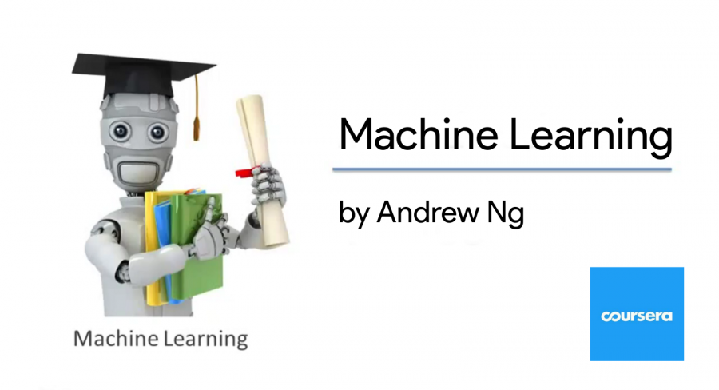

This is a list of my education and learning experience.
Degrees
List of degrees that I am working on / have earned!
Master's in Computer Science
Studying Deep Learning and Machine learning under Dr. Mohammad Rashedul Hasan.
Research assistant with
the Network-centric and Data-driven Learning research group.
GPA: 4.0/4.0
Teaching (Graduate Teaching Assistant): Machine Learning, Data Analysis and Modeling
Coursework: AI, Game-Theory, Cyberphysical Systems, Data-Mining, Robotics Today, DL: Assured Autonomy,
NLP with Deep Learning.
Thesis: Self-Supervised Learning for Camera-Trap Image Classification.
Bachelor's in Computer Science and Economics
Graduated with High Distinction (Magna Cum Laude).
GPA: 3.91/4.0
Teaching (Teaching Assistant): Discrete Mathematics, Machine Learning
Coursework: Machine Learning, Deep Learning, Algorithms, Data Structures, Software Engineering, Calculus (I, II), Linear Algebra, , Micro/Macro Economics, International Economics, Econometrics.
Thesis: Artificial Intelligence and Labor: A look into the future of the Healthcare industry, advised by Dr. Uchechukwu Jarrett and Dr. Daniel Tannenbaum
Certifications
List of certifications that I have completed!
Deep Reinforcement Learning Nanodegree
Nanodegree certification provided by Udacity.
Implemented several deep reinforcement learning algorithms using PyTorch and Unity to solve problems like
Navigation,
Control and Competition
Deep Learning Specialization
Certification provided by Deeplearning.ai through Coursera.
Learned about the fundamentals of Deep Learning. The course provides theoretical foundations coupled with implementation using libraries like NumPy, Tensorflow and Keras.
Deep Learning Nanodegree
Nanodegree certification provided by Udacity.
Implemented several deep neural networks using PyTorch to solve problems like Regression, Image Classification,
Sentiment Analysis.

Stanford Machine Learning
Certification provided by Stanford through Coursera.
Covers the fundamentals of Machine Learning theory. The course also provides implementation using Matlab/Octave.